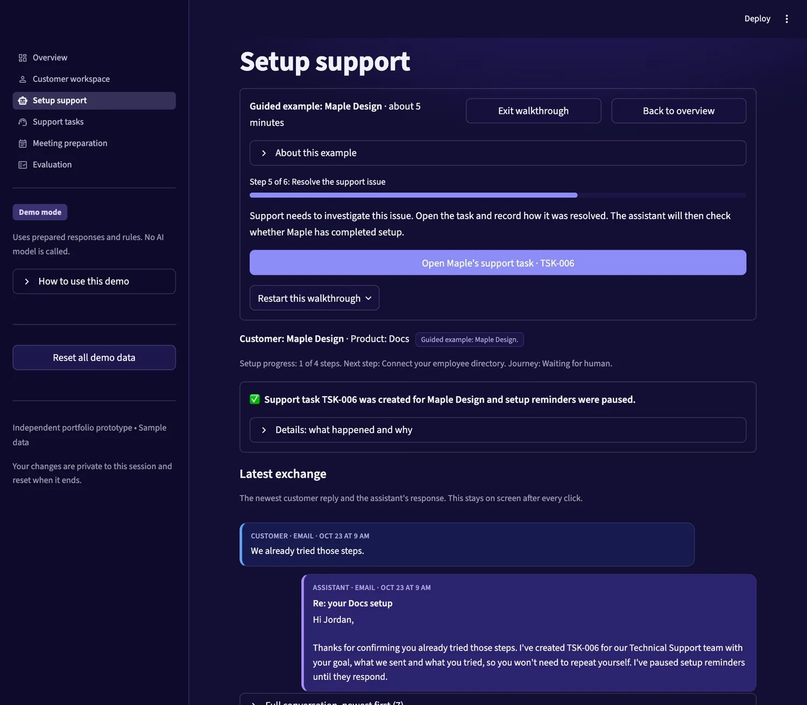
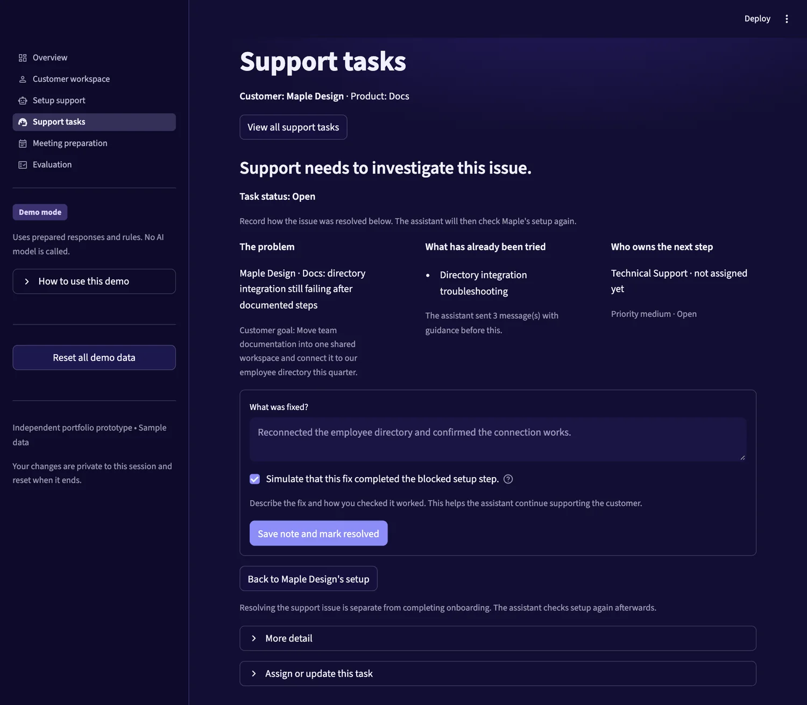
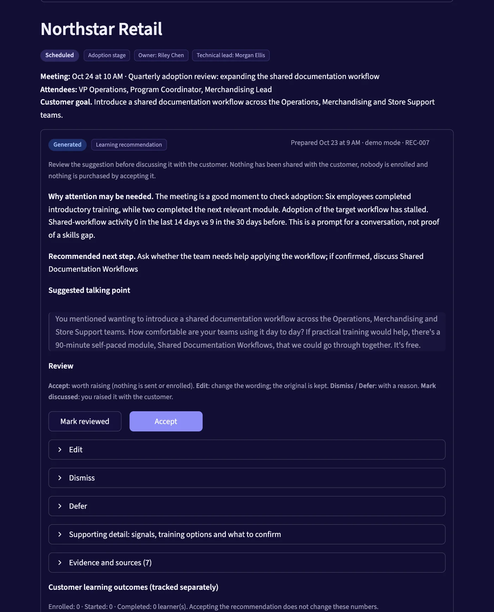

Project overview
I designed and built a customer-success workflow prototype to explore how customer information can lead to timely, useful actions. The product demonstrates setup guidance, support handoffs, and meeting preparation, with clear rules for when automation can act and when a person should review.
It has two workflows: helping a customer complete setup, and helping a sales or customer-success employee prepare for a customer conversation. Both read the same sample customer records, product usage, support cases, documentation and rules.

The problem
Customer information is often spread across product reports, support systems, and learning records. Teams need to understand which customers are stuck, why they need help, and what action would be useful. Finding that context and coordinating follow-up can involve repetitive manual work.
This is the problem the prototype explores. It is not based on customer interviews, research findings, or evidence from production deployments.
Who it is for
- Customer success: identify stalled setup and decide which customers need help.
- Support: receive enough context to investigate without repeating previous troubleshooting.
- Sales and customer success: prepare relevant questions and recommendations before a customer meeting.
- Product and operations: inspect workflow behavior and feedback.
My contribution
- Defined the product scope and the two main workflows.
- Designed how customer context informs guidance and recommendations.
- Defined the rules for outreach, escalation, human review, and completion.
- Built and iterated on the interactive prototype, working with an AI coding assistant for much of the implementation and reviewing the behavior myself in the browser and through tests.
- Developed an evaluation approach for workflow behavior and response quality: automated workflow checks, click-through tests, and a human rating rubric (response quality ratings have not been collected yet).
Workflow one: help a customer complete setup
Example customer: Maple Design (sample data).
- Review the customer's goal and setup progress.
- Identify the next incomplete step.
- Provide relevant instructions from the product documentation.
- Respond to a reported blocker. If the error is unclear, ask which error occurred before sending the matching section.
- Involve support when guidance does not resolve the issue.
- Pass along the customer's goal and previous troubleshooting.
- Recheck product progress after support resolves the issue.
- Close the journey only when completion is supported by the required sample events.
The intended value, as design goals rather than measured results: consistent guidance, clearer handoffs, and fewer unnecessary reminders.

Workflow two: prepare for a customer conversation
Example customer: Northstar Retail (sample data).
- Review customer goals, usage, learning activity, and meeting context.
- Identify a topic worth discussing.
- Prepare a summary and a relevant learning recommendation.
- Show the supporting evidence.
- Let a person accept, edit, dismiss, or defer the suggestion.
- Record whether it was discussed.
- Track customer learning progress separately.
Low usage is a reason to investigate, not automatic proof of a skills gap. Accepting a recommendation does not mean the customer enrolled, completed training, or increased usage.

Key product decisions
| Decision | Why it matters |
|---|---|
| Preserve the customer across pages | Prevents users from acting on the wrong company's information |
| Respect planned rollout dates | Avoids contacting customers before they intend to start |
| Pause reminders during support investigation | Avoids conflicting or repetitive outreach |
| Include previous troubleshooting in handoffs | Gives support the context needed to continue |
| Show evidence behind recommendations | Helps reviewers judge whether a suggestion is appropriate |
| Keep review decisions separate from customer outcomes | Prevents acceptance from being mistaken for actual adoption |
| Check completion evidence | Avoids closing a journey based only on a message claiming completion |
Each of these is implemented in the prototype and covered by an automated check or test.
Iteration and usability
Walking through the prototype end to end showed where behavior was unclear. I fixed each of these and re-checked them in the browser and with regression tests:
- The selected customer did not carry consistently across pages.
- The most recent customer reply and assistant response were hard to find.
- Support tasks could open without enough customer context.
- Resolution and return-navigation controls were unclear.
This was my own walkthrough testing. It was not formal user research or an external usability study.
Validation and measurement
What was validated in the prototype
Checked on 23 October 2026 (version 87d57d8 of the repository):
- 77 automated tests pass: 41 workflow and unit tests, 19 UI click-through tests, 13 customer-context regression tests, and 4 tests of an optional model adapter using a fake client.
- 35 of 35 workflow checks pass, covering the behaviors in the table above plus duplicate messages, tasks and recommendations; account isolation; failed handoffs being reported honestly; and unsupported claims being excluded.
- Browser walkthroughs of both workflows: correct customer and task selection, visible customer replies and assistant responses, no duplicate support tasks, clear validation for a missing resolution note, support resolution remaining separate from onboarding completion, completion stopping reminders, and review decisions remaining separate from learning outcomes.
- Demonstration coverage uses 43 sample accounts. These are not real customers and say nothing about adoption.
Not evaluated: language quality (the rating form exists, no ratings are recorded), any real language model, and any business outcome.
What I would measure in a pilot
These are proposed measures, not achieved results.
| Goal | Proposed measure |
|---|---|
| Help customers get started | Setup completion rate and time to first value |
| Reduce repetitive work | Manual follow-ups and meeting preparation time |
| Improve support handoffs | Time to resolution and repeated requests for context |
| Make recommendations useful | Review, acceptance, edit, dismissal, and discussion rates |
| Support learning | Enrollment, course starts, and completion |
| Understand downstream value | Meaningful product usage after assistance or training |
| Avoid unnecessary contact | Duplicate outreach, opt-outs, and inappropriate reminders |
Evaluation approach: establish a baseline and, where feasible, compare a pilot group with a comparable group. A before-and-after change alone would not show that the product caused it.
What works today and what does not
Implemented in the prototype
- Both workflows, end to end, on sample data
- Rules for outreach, escalation, completion and review
- 16 validated tools with account boundaries and idempotency
- Keyword search over sample documentation and a small training catalog
- Review history, feedback summary and activity records
- Automated workflow checks and UI tests
Not built (future work)
- Connections to real CRM, email, calendar, support or learning systems
- A real language model in the default experience
- Embedding-based retrieval or predictive models
- A pilot with real users or a comparison group
- Collected human ratings of response quality
More detail is in the repository README, including architecture, setup instructions and limitations.